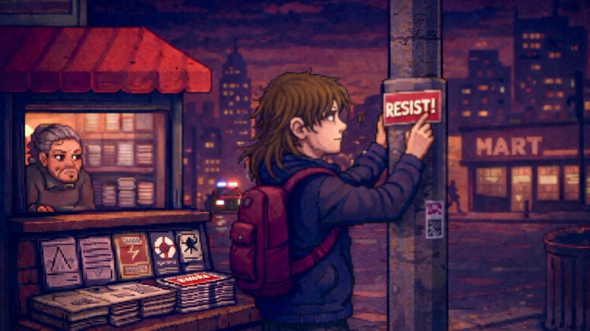

Making Resistance Playable
Part of New & Improved™ — A deep dive into creating a culturally relevant video game.

Real Change Comes From Action (or Interaction)
In the first part of this series, I wrote about why I wanted to start ideating on a game like New & Improved™, and why engaging directly with culture felt more honest than abstracting conflict into violence. Part 2 translated that into systems, exploring how progression mechanics like Street Cred and the Subversion Meter might carry meaning forward without flattening it. Part 3 pulled the camera back to the city itself, looking at how space, pacing, and level structure shape difficulty and emotional rhythm.
This week narrows the focus again, down to the player interactions in the game.
Because no matter how thoughtful the systems are, or how carefully the city is constructed, the game ultimately lives in the moments where the player is asked to do something. Accept a job. Help a neighbor. Take a risk in public. Commit to an act knowing it might go sideways.
This is where resistance stops being theoretical and starts being playable.
Design Note
A game about culture succeeds or fails in the verbs, not the theme statement.
Quests as the Backbone of Play
At its core, New & Improved™, like many games, is quest-driven. Quests are the primary way players engage with the city, people, and systems. They all introduce (hopefully) meaningful mechanics, escalate risk, and give structure to what might otherwise feel like aimless wandering.
Early quests in Midtown are intentionally small and grounded. One of the first asks the player to distract a newsstand proprietor long enough to slip underground zines into the rack. Mechanically, it introduces NPC interaction, timing, and light stealth. Thematically, it establishes an important baseline: resistance here isn’t loud or heroic. It’s opportunistic, social, and just a little awkward.
Another early quest tasks the player with placing a poster on the window of a chain grocer. It’s a simple action on paper, but the execution requires vertical movement, climbing to a ledge, watching patrol timing, and committing to the placement mini-game while exposed. The reward isn’t just Street Cred or Subversion percentage. It’s learning how visibility feels when you can’t immediately escape.
Sticker runs push this further. Tagging a sequence of power poles along a street becomes a rhythm exercise: move, place, move again, all while staying aware of NPC sightlines. These quests are quick, almost mundane, but they reinforce that momentum is fragile. Hesitate too long, and attention finds you.
Midway through the district, the player is asked to scope a billboard rather than act on it. This quest deliberately withholds payoff. You climb, observe sightlines, note patrol patterns, and leave. Only later, after earning enough Street Cred to buy spray paint, does the actual hijack become possible. Planning becomes part of progression.
None of these quests exists in isolation. Completing them shifts how the street behaves. NPC emoji reactions change. Patrol presence becomes more noticeable. The city starts responding. Not dramatically at first, but enough that players can feel the feedback loop forming.
As the game moves into harsher districts, quests evolve. ATM hacking in Downtown Capitalis introduces conspicuous, slow actions in hostile spaces. Organizing a flashmob later on isn’t about placement at all. It’s about coordinating NPC behavior to physically alter patrol routes. The verb changes, but the question remains the same: how much are you willing to risk, and who are you willing to rely on?
If players don’t understand why a quest exists or what changed because they completed it, the meaning collapses. These sequences will need early prototyping, not to polish them, but to confirm they communicate what they’re meant to.
Design Note
A quest should teach the city as much as it teaches a mechanic.
Side Quests as Trust, Texture, and Breathing Room
Side quests exist to humanize the city.
Helping Mrs. Gardner retrieve her dropped purse. Creating a distraction for a shop owner. Intervening in a small, local conflict that doesn’t ripple across the whole district. These moments aren’t about spectacle or score. They’re about grounding.
Mechanically, side quests are lower-stakes opportunities to experiment. They let players practice timing, stealth, and navigation without the full weight of systemic consequences. Emotionally, they reinforce that resistance isn’t abstract. It’s relational.
Not every meaningful action needs to spike the Subversion Meter. Some build credibility quietly. Some just make the city feel like it notices you.
Design Note
Side quests are where players learn whether the world cares.
Minigames as Expression, Not Distraction
Minigames in New & Improved™ aren’t meant to replace quests. They exist to support them.
They onboard mechanics. They reinforce skills. They give physical texture to actions that would otherwise collapse into a button press. Graffiti emphasizes exposure and time. Flyering and sticker placement prioritize movement and awareness. Zine distribution introduces light chaos. ATM hacking is slow, conspicuous, and nerve-wracking. Billboard hijacks demand planning, traversal, and commitment.
In most cases, these minigames are embedded inside quests rather than something the player encounters out of context. They’re not diversions, but the moment-to-moment friction that makes an action feel real.
And minigames will live or die by how playable they are. If a minigame breaks flow, adds too much noise, or becomes tedious, no amount of narrative or thematic justification will save it. These systems will need to be prototyped to see where they confuse, frustrate, or overstimulate.
Design Note
Meaning doesn’t survive bad UX.
Risk, Timing, and the Cost of Being Seen
Every quest, side quest, and minigame exists within the same risk framework.
Timing matters. NPC proximity matters. Detection matters. Getting interrupted halfway through an action matters. Failure isn’t abstract and (I hope) it has memory.
Getting caught can wipe Street Cred, erase momentum, and reduce cultural influence. That harshness isn’t meant to punish curiosity. It’s meant to underline fragility. Progress isn’t guaranteed. Trust isn’t permanent.
That said, this is one of the most delicate parts of the design. Loss should communicate consequence, and it should not feel discouraging. Unfortunately, this won’t be solved by my talking about it. It’ll require real gameplay scenarios.
Design Note
Consequence only works if players believe recovery is possible.
Making Resistance Tangible
What ties all of this together, the quests, side quests, minigames, and risk, is tangibility.
Resistance in New & Improved™ isn’t a cutscene or a dialogue choice. It’s a series of physical acts performed under pressure. It’s deciding whether you can finish a tag before a patrol turns the corner. It’s choosing whether to help someone, knowing it might expose you later. It’s committing to a billboard run that will absolutely draw attention.
The goal isn’t to simulate activism perfectly. It’s to make the feeling legible: the tension, the uncertainty, the small victories, and the constant sense that progress can be undone.
If it works, players won’t just understand the systems, they’ll internalize them.
Design Note
If resistance feels clean, it probably feels fake.
Looking Ahead
Again, all of this remains speculative until it’s tested. Systems that look elegant in a document can collapse the moment real people interact with them. Anyone who has done this before knows that it’s the typical process. Thoughtful design gets you to a starting point. Playtesting tells you whether you’re anywhere close to the truth.
Next week, all of these threads converge.
I’ll discuss how systems, space, and action come together for the ultimate act of resistance: the Final Broadcast Hack… What it means for the city…and what it means for the player.
Page formatted by Written & Formatted. © Tim Samoff.